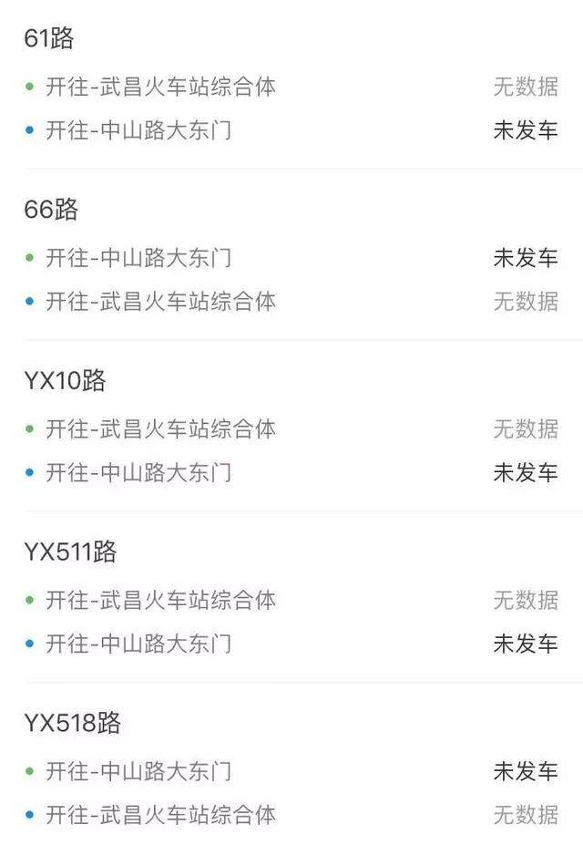
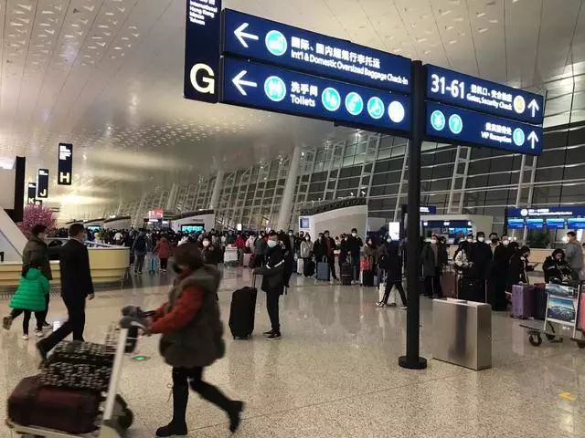

武汉“封城”首日
原文链接 备份链接 ********** *****他们很想回家，和孩子最近一次见面还是暑假。但谁也不敢回去。“万一有什么事，也不能把病毒扩散到别处，是不是？” ***** 6时35分，汉口站广场上，一队警务人员正在开会。 新京报记者 …

关闭高速公路已是迫在眉睫，此前有因为自驾出游导致疑似感染的病例。截至1月23日下午14时，出武汉市的高速公路开始封闭

湖北省武汉市洪山区武鄂高速公路龚家岭收费站，已经堵车一个半小时
文 |《财经》记者 陈亮 李皙寅 王静仪
编辑 | 施智梁
1月22日一天之内，武汉新增62例新型冠状病毒感染的肺炎病例。随着武汉肺炎疫情进一步蔓延，此前多位专业人士建议的全面封闭武汉公交系统，最终成为现实。
武汉市新型冠状病毒感染的肺炎疫情防控指挥部于1月23日凌晨2时发布公告，自2020年1月23日10时起，全市城市公交、地铁、轮渡、长途客运暂停运营；机场、火车站离汉通道暂时关闭。恢复时间另行通告。
1月23日下午2时许，央视记者从湖北省高速公路管理部门获悉，湖北省内龚家岭、小军山、汉南、北湖、花山、柏泉、青龙、西湖站入口封闭。京港澳高速武汉西、武汉北、蔡甸、永安收费站口封闭。其他出武汉市的高速公路口也已开始封闭。
在外界看来，武汉实施只能进城不能出城的“封城”措施，实属无奈之举，虽然会给市民生活带来诸多不便，但有利于疫情排查和防控。一名返汉途中的乘客对《财经》记者表示，他们还没接到不能停靠汉口站的通知。“目前还是单向的命令，即管出不管进。”
从1月23日早上开始，离开武汉的公共交通系统正在逐渐关闭。据AirSavvi数据，1月23日武汉机场计划进出港航班629架次。截至13点05分，已经累计取消了412架次。完成出港航班66架次，最后出港航班号CZ356，目的地广州，离港时间12点55分。
武汉天河机场新闻中心中层干部告诉《财经》记者，目前武汉天河机场没有关闭，仍在运行。截至10时，进港20架次，出港45架次。《财经》记者最新获悉，目前旅客已不能进入武汉天河机场候机楼，落地旅客可以出航站楼。
公路是众多武汉市内人民离开武汉的重要选择。截止2019年中，武汉共有各种车辆超过320万，日常驾车出行人次多达数百万。《财经》记者获悉，从武汉昨日开始实施进出城道口重大疫情排查防控以来，公路检测点出现较为明显的排队情况，平均排队时间30分钟左右。

武汉市内公交车基本已经停运
但这一通道也在被关闭。央视记者从湖北省高速公路管理部门获悉，湖北省内龚家岭、小军山、汉南、北湖、花山、柏泉、青龙、西湖站入口封闭。京港澳高速武汉西、武汉北、蔡甸、永安收费站口封闭。其他出武汉市的高速公路口也已开始封闭。有人感叹：这就是真的“土城”了，还没有离开武汉的人，接下来只能留守当地了。
有人选择离开武汉，也有人选择主动留守。“这个时候我不会离开武汉。”一位驻守一线的当地记者告诉《财经》记者，武汉现在虽形势严峻，但是中央、武汉市委市政府决定封城，旨在不让病毒扩散而影响其他城市。武汉目前已是有壮士断腕的决心。
为应对疫情，厦门航空、东方航空（600115.SH/00670.HK/NYSE:CEA）、南方航空（600029..SH/01055.HK/）等航司从昨晚至今晨一直在开会讨论航班调整计划。

1月23日早上的武汉天河机场
厦门航空的工作人员告诉《财经》记者，厦门航空已于1月22日制定武汉航班调整计划，采用取消政策。厦门航空取消了1月23日部分武汉进出港航班，例如8:15杭州至武汉、11:00武汉至杭州的航班等。
经过管理层凌晨开会决议后，东方航空也取消1月23日东方航空、上海航空实际执飞武汉的部分进出港航班，涉及20个架次。例如6:55上海浦东至武汉、10:25武汉至上海虹桥等。《财经》记者获悉，1月23日凌晨东方航空武汉出港航班有7个，共计883人；武汉进港航班8个航班，共计440人。
南方航空1月23日10时后武汉出港航班全部取消。此外，南方航空还取消了部分进港航班。取消进出武汉航班架次达107架次。
《财经》记者向中国国航（601111.SH/00753.HK）询问相关情况，目前中国国航尚未就涉及武汉的航班情况作出表态。
据AirSavvi数据，1月23日武汉机场计划进出港航班629架次。截至13点05分，已经累计取消了412架次。完成进港航班37架次，最后进港航班号CA8244，出发地贵阳，落地时间13点01分。完成出港航班66架次，最后出港航班号CZ356，目的地广州，离港时间为1月23日12点55分。
23日武汉机场出港航班目的地分别为：广州、巴黎、成都、曼谷、福州、香港、长滩岛、兰州、拉萨、西宁。进港航班出发地分别为：广州、重庆、太原、成都、曼谷、厦门、三亚、温州、胡志明、香港、贵阳、西安、恩施、兰州、北京、上海、昆明、临汾、天津、海口、巴厘岛、宁波、仰光、福州、杭州、泉州、深圳、普吉、青岛。
武汉天河机场新闻中心一位工作人员强调，武汉机场没有关闭，仍在运行。目前机场方面在组织网约车、大巴保障旅客出行。据悉，机场已经设立进出口双向测温，所有工作人员均佩戴口罩。现场旅客在目力所及范围也都戴上了口罩。
东方航空涉武汉航线机组乘务组、武汉机场地服员工已全面发放口罩，可在工作全程中佩戴，其他航线员工也全部佩戴口罩，做好个人防护。
在接收武汉进港航班的地区，航空公司也采取了措施。东方航空地面服务部的工作人员对《财经》记者表示，在上海虹桥和浦东机场，东航地服安排专人、专车、专用设备保障涉武汉航班，针对性升级防护消毒措施，保护旅客及员工安全。
虽然各航空公司都在取消了大部分涉及武汉的航班，但10时以后仍有少部分航空从武汉天河机场起飞。例如10：00武汉至哈尔滨、10:15武汉至西宁、10：15武汉至拉萨、10:40武汉至南宁、11:05武汉至西宁、11:30武汉至巴黎。
与此同时，武汉火车站开始出行管制，想进站离开武汉的乘客被阻拦，从外地到武汉的乘客可以停靠并出站。
一名返汉途中的乘客对《财经》记者表示，他们还没接到不能停靠汉口站的通知，目前还是单向的命令。1月23日上午11时许达到汉口站的旅客告诉《财经》记者，出站时没有特别的安检措施，“也没有人测我的体温”。上述旅客表示，已看不到进站乘客，出车厢后只有下车乘客与乘务人员，进站入口、地铁口等已关闭。
出站后，打车需要排队上百人，最终上述旅客选择骑行近5公里回到家中。
公路能否有效管控？
“无特殊原因，市民不要离开武汉，机场、火车站离汉通道暂时关闭。”《财经》记者留意到，在这份武汉市新型冠状病毒感染的肺炎疫情防控指挥部1月23日凌晨发布的通告中，未提及关闭高速公路、国道等公路，因此有人认为，“封城”并不彻底。
根据当地人提供的情况，“封城”消息公布后，自驾出行成为武汉市内人们离开的唯一选择，一时间造成许多路段拥堵。根据指挥部现行规定，武汉不限制车辆进出城，但需要排查车内人员体温和是否载有活禽活畜和野生动物。
这一规定从1月22日起实施，具体操作方法为：佩戴防护口罩和防护手套的民警要求驾驶员打开后备厢，查看是否载有活禽活畜和野生动物；两名身穿白色防护服的卫生防疫人员，手持测温枪，逐一进行检测和筛查。一旦确认车辆未载有活禽活畜和野生动物，司机和车内旅客体温正常，随即给予放行。
从武汉昨日开始实施进出城道口重大疫情排查防控以来，公路检测点出现较为明显的排队情况，平均排队时间30分钟左右。
武汉本地媒体长江网报道，民警人手已不够，各区政府职能部门如交通运输局、文化和旅游局、园林和林业局、卫生健康局等单位都派出工作人员，一道在公路上检查过往车辆。
此前尚未限制鄂A牌照出城，检查措施也不是天衣无缝。刘先生1月23日上午9点左右从汉蔡高速离开武汉，“没有人查体温，一路上也没有，”他告诉《财经》记者，“出武汉的高速上车非常多。”汉蔡高速通往宜昌、十堰、西安、北京等，是当地重要的对外交通通道。
据《中国经营报》报道，1月23日9时许，作为武汉出城重要高速公路之一的汉蔡高速收费口，大量离汉车辆正排队。至上午9时30时，肉眼已经难以看到排队车辆的队尾，出行车辆已经等候半小时以上。
1月23日早上准备离开武汉的市民告诉《财经》记者，已经在龚家岭收费站排队一个半小时。龚家岭收费站位于武鄂高速，武鄂高速是武汉左岭至鄂州花湖的公路，是武汉“1+8城市圈”公路水路交通发展规划中的七条射线之一。
关闭高速公路已是迫在眉睫，此前有因为自驾出游导致疑似感染的病例。据人民日报报道，内蒙古自治区满洲里市发现1例新型冠状病毒感染的肺炎疑似病例。患者男，30岁，家住武汉市，从事服装生意，21日自驾游到满洲里市后，直接到满洲里市人民医院急诊科就诊。
截至1月23日中午12点半，湖北高速交警最新一条微博是：“高速公路因雾实施的临时交通管制已全部解除，全省高速公路恢复正常通行。”底下评论大量市民询问高速是否会扩大封路，尚无应答。
在微博等社交媒体上，网友们正在掀起一股对出城鄂A牌照的讨论。先后有网友发文称，在高速路上，刚才旁边有辆鄂A，坐标宜宾；“封城”的结果就是，鄂A字牌照把下面的地级市围得水泄不通。
湖北省宜昌市在1月22日发布，在各高速公路收费站出口，对通过高速公路进入本市的鄂A牌照车辆，开设专用人工通道，对司乘人员测温排查。
武汉周边地市无法独善其身。东风出行相关人员对《财经》记者透露，除了为武汉平台的车辆配发84消毒液等设备外，对临近的襄阳、十堰地区也指定了预案。
除了高速，还有国道和村道可供对外出行。一位武汉当地市民对《财经》记者表示了疑虑，虽然高速封了，但国道和村道怎么办？武汉地形特殊，不知道会不会把桥梁和隧道封闭？
截至1月23日下午2时许，央视记者从湖北省高速公路管理部门获悉，湖北省内龚家岭、小军山、汉南、北湖、花山、柏泉、青龙、西湖站入口封闭。京港澳高速武汉西、武汉北、蔡甸、永安收费站口封闭。其他出武汉市的高速公路口也已开始封闭。
由于武汉市疫情防控指挥部通告（第1号）决定，今早10时起，长途客运全部暂停运营，网约车和出租车成为市民跨市出行的重要公共交通方式。
嘀嗒顺风车回应《财经》记者称，10点起，嘀嗒出行启动一级响应，已暂时关闭武汉城际顺风车和市内顺风车通道。
留守的市民：这个时候我不会离开武汉
“速冻饺子好像储备的不够，就剩两袋，一家三口一餐就能吃一袋”。一位留守在武汉的市民刚刚吃过封城后的第一餐。
当早已习惯的东西突然停摆，会让人颇为措手不及。速冻饺子不足后，打开电商买菜平台，却发现有的已经不接单，已下单的也成为薛定谔的快递。出门去菜市场，途径楼下的小超市，店主说库存已经卖光。
戴着口罩的市民，平常不常买菜的人也再度走进了菜市场。一位身处武汉大学城的关先生告诉《财经》记者，得知封城消息后，菜市场的价格较往常上涨了50%左右，“大白菜5块一斤，千张10块一斤，菜苔5块一斤。”
关先生透露，小外卖好像都关了，但是大一点的，肯德基啊老乡鸡啊这种，食堂还有少数在营业，为此他储备了一个月的生活物资。

出差武汉遭遇封城的关先生表示，蔬菜有些难买，价格上涨了近五成
武汉新型肺炎防控指挥部发布第2号通告，关闭离汉通道是阻止疫情扩散的必要之举，目前武汉市大宗商品、食品、医疗防护用品等储备充分、供应顺畅。请广大市民不用恐慌，不必囤积，以免造成不必要的浪费。
经常出差武汉的他，第一次在武汉过年就遇到“封城”，“只要基本水电气网络供应没问题，物流和快递能维持个基本的，我觉得对大部分居民影响应该不会太大。
当天早些时候，市疫情防控指挥部通告（第1号）决定，从1月23日10时起，全市公共交通全部暂停运营，出租车成为部分市民必要出行的重要方式。
为此，武汉市客管处告知广大出租车驾驶员，严禁借机讹财和拼车、拒载、绕道等违法运营行为。违者将按最严厉标准惩处。当地网约车也开始响应，未出行的行程普遍可以免责取消。
东风出行相关人员对《财经》记者回应，武汉的运营车辆配备了84消毒液，每天洗消；若司机被确诊，在治疗和隔离期间，租车合同中止，免除租金。
共享单车或许成为重要的补充出行手段，一位上午抵达汉口火车站的旅客表示，出站后，打车需要排队上百人，因此该乘客最后选择骑行近5公里回到家中。
1月23日12点55分，《财经》记者采用滴滴出行试图在汉口火车站叫车，显示排队第116位，预计应答时长超过一小时。武汉火车站则有40人在排队，预计应答时间40分钟。
武汉周边地区的市民也已经逐渐进入戒备，一位李姓十堰居民表示，十堰也比较重视防疫，城区居民防疫意识较强，下辖的县市区则差一点，街上戴口罩的只有极少部分人，武汉封城后，十堰的口罩比较紧缺，好多药店已经买不到了。
东风出行相关人员对《财经》记者透露，除了为武汉平台的车辆配发84消毒液等设备外，对临近的襄阳、十堰地区也指定了预案。
“返乡的大部分在腊月二十五左右就回来了”李女士表示，各县已经重视返乡人员的情况。不过菜价基本正常，往年也是过年前这个时间上涨，但目前还没受疫情影响。
在采访中，留守的武汉市民最多说的就是，虽然也有点害怕，但希望不要引起恐慌。
“这个时候我不会离开武汉。”一位驻守一线的当地记者告诉《财经》记者，武汉现在虽形势严峻，但是中央、武汉市委市政府决定封城，旨在不让病毒扩散而影响其他城市。武汉目前已是有壮士断腕的决心。
（《财经》记者王斌斌、新媒体运营编辑杨佩谦对本文亦有贡献）
本文由树木计划作者【财经杂志】创作，独家发布在今日头条，未经授权，不得转载
“武汉肺炎”疫情系列报道

▷ 点击图片查看
责编 | 黄端 duanhuang@caijing.com.cn
本文为《财经》杂志原创文章，未经授权不得转载或建立镜像。如需转载，请在文末留言申请并获取授权。
原文链接 备份链接 ********** *****他们很想回家，和孩子最近一次见面还是暑假。但谁也不敢回去。“万一有什么事，也不能把病毒扩散到别处，是不是？” ***** 6时35分，汉口站广场上，一队警务人员正在开会。 新京报记者 …
原文链接 备份链接 1月23日上午10时20分，湖北武汉汉口火车站进站口，工作人员向旅客解释离汉通道暂时关闭的情况。中青报·中青网记者 王嘉兴/摄 中青报·中青网记者 王嘉兴 1月23日凌晨2时，武汉市疫情防控指挥部发布通告，自2020 …
原文链接 备份链接 不管是医生、护士、病患、疑似病患，还是星夜出城的情侣、着急的母亲、加班的创业者，没有人提到现在是春节，今天是除夕 文 |《财经》记者 房宫一柳 陈晶 编辑 | 宋玮 一些武汉人起床晚，他们可能比全国网民更晚知道武汉“封 …
原文链接 备份链接 作者 | 第一财经 吴绵强 周芳 陈益刊 编辑 | 张富贵 为了遏制新型冠状病毒感染的肺炎扩散，按照武汉市新型冠状病毒感染的肺炎疫情防控指挥部通告，自1月23日10时起，武汉全市城市公交、地铁、轮渡、长途客运暂停运营； …
原文链接 备份链接 文 | 王彦入 王丹妮 程静之 殷盛琳 李晓芳 周航 叶雯 曾宪雯 编辑 | 王珊 陶若谷 33岁的刘科戴上两层口罩独自走进地铁，夹杂在路人中间。像他这样拉着行李箱的人并不少见，彼此间默契地保持着距离。三天前，他刚刚从 …